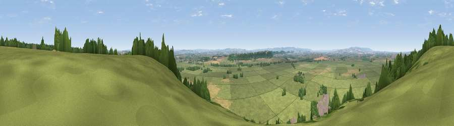

Viewpoint near Aller
#15060 in England · top 43% of its area beats it · near Aller · footpathWhere it is
The exact computed spot (ST 40375 29325). Click the marker for map links.
Public access: a public right of way passes within 48 m of this spot. Computed from Natural England's CRoW access layer and OpenStreetMap rights of way — not the legal definitive map. Always verify locally.
The view, rendered

A 360° render of this exact spot computed from the terrain model, tree cover and land cover — summer colours, afternoon light, calibrated against photographs of famous viewpoints. Real trees, hedges and buildings will differ in detail.
The panorama
Grey silhouette: terrain skyline in each direction (720 bearings, Earth curvature and refraction included). Dashed green: skyline with trees (+15 m) and buildings (+8 m) as obstacles. Blue strip: how far the ground is visible on each bearing.
Where the view opens
Wedge length = distance to the farthest visible ground on that bearing (vegetation-aware). Rings at 10, 25 and 50 km.
What fills the view
80% grassland · 9% cropland · 8% woodland · 3% built-up
Angular shares of the visible panorama (visual magnitude), not map area. Landscape diversity 0.32 (0–1 Shannon).
Key numbers
More beautiful places nearby
The staircase of upgrades: each row has a higher view potential than everything closer. Driving times are estimates from straight-line distance, calibrated against real road routing — check an actual route before setting out.
| Place | Direction | Drive | Score |
|---|---|---|---|
| Viewpoint near Aller | NNW · 0 km | ~1 min | 61.8 |
| Viewpoint near Aller | N · 1 km | ~3 min | 64.2 |
| Lollover Hill | ENE · 8 km | ~16 min | 66.4 |
| Socombe Hill | NNW · 9 km | ~18 min | 76.4 |
| Viewpoint near Buckland St. Mary | SW · 19 km | ~32 min | 77.3 |
| Viewpoint near Hewish | S · 19 km | ~33 min | 78.5 |
| Cothelstone Hill | W · 22 km | ~36 min | 82.1 |
| Viewpoint near West Bagborough | WNW · 23 km | ~38 min | 84.3 |
51.06015, -2.85219 · source: screening · position refined by local search. Computed location — check access rights before visiting.